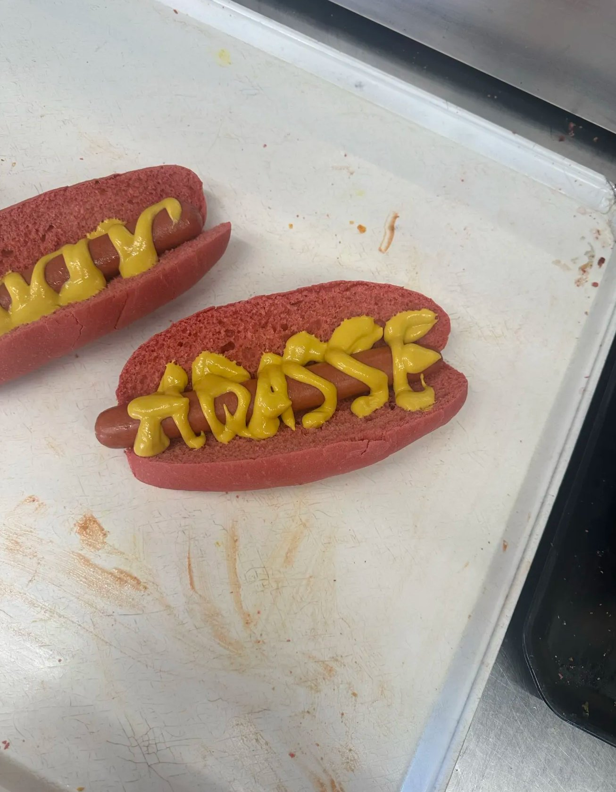
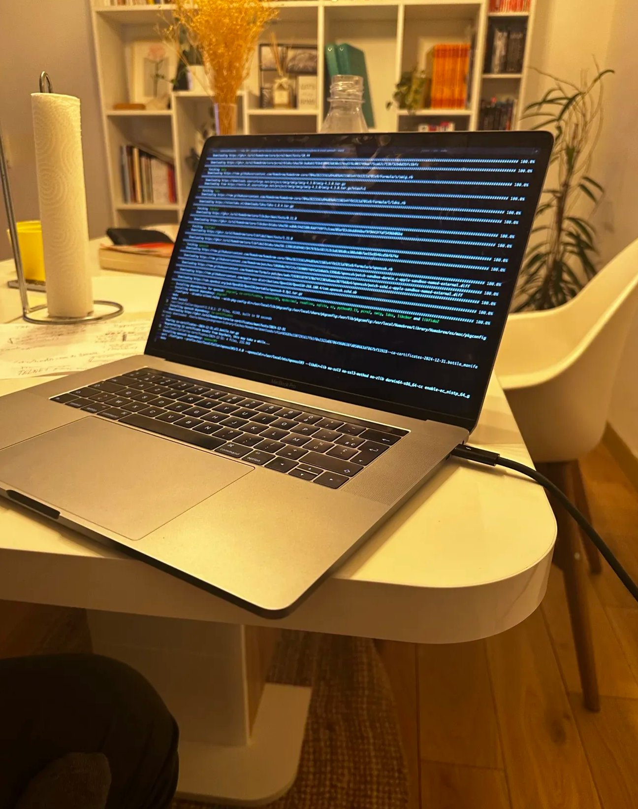

About me
Abasse
Minté
21 ans · Paris, France
Franchement... j'aime la vie !
Développeur, cycliste, basketteur, cinéphile, foodie, tout à la fois. Voici mon histoire.
 01
2013 – 2022
01
2013 – 2022
Neuf ans
sur le parquet
J'ai joué au basketball pendant neuf ans, neuf ans à courir, shooter, suer, progresser...
Autant de souvenirs gravés. J'ai arrêté parce que mes études prenaient trop de place,
mais cette mentalité de travail, elle est restée.
Le sport m'a appris à ne jamais lâcher.
 02
New passion
02
New passion
90% de mes trajets
à vélo
Maintenant c'est le vélo ! C'est devenu ma nouvelle passion, et je fais
90 % de mes déplacements à vélo. Oui, 90 % !
Que ce soit pour aller en cours, sortir, ou juste prendre l'air, je pédale.
Ça me libère l'esprit, ça me motive et ça me fait du bien.
 03
Nature & aventure
03
Nature & aventure
Montagne, forêt
& grand air
J'aime la nature, les balades en forêt, les sentiers de montagne,
ces moments où tu coupes tout et tu marches juste pour marcher.
C'est une façon de recharger les batteries,
de retrouver le calme loin des écrans. La nature m'apaise autant que le code m'électrise.

04 J'adore manger
Tempura, shawarma
& bubble tea
J'adore vraiment manger. Sérieusement.
Tempura, crevettes, saumon, shawarma... incroyable.
Et le bubble tea ? N'en parlons même pas.
C'est mon petit paradis.
 05
Multiple worlds
05
Multiple worlds
Cinéma, mode
F1 & technologie
Je suis passionné de cinéma, mode, Formule 1 et informatique.
Oui, tout ça en même temps ! Des univers différents, mais chacun avec sa propre énergie,
son style et son intensité. Ce sont ces contrastes qui me définissent.

06 Since middle school
Je code
depuis le collège
J'ai commencé à coder au collège, au Kids Coding Club. Et puis...
le déclic. Je suis tombé amoureux du développement. Ce que j'aime tout particulièrement —
ce que j'aime le plus, c'est concevoir des algorithmes.
Imaginer, structurer, optimiser... Je peux passer la nuit entière à coder jusqu'à ce qu'une fonction marche.
Je ne lâche pas tant que ce n'est pas parfait.
The ambition
Devenir ingénieur
logiciel Java.
Clair. Précis. Ambitieux.
MUÏO
Je filme des souvenirs, des atmosphères, des instants simples mais puissants.


Et après ?
Voyager, découvrir le monde,
voir autre chose, vivre encore plus d'expériences.
En attendant, chaque instant compte. Check MUÏO 🎥